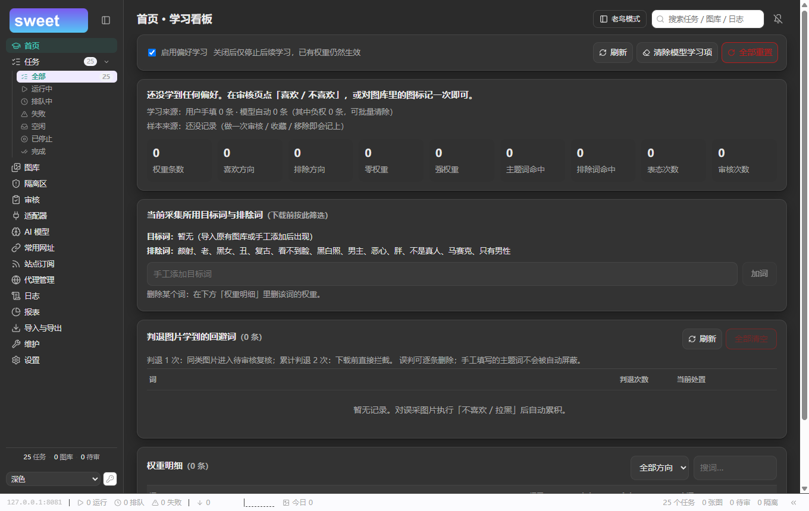

把网上的图，收进
自己的库
一条可管的采集流水线：合规检查、自动去重、本地 AI 筛选、人工审核，最后沉淀成能搜、能看、能长期保存的图库。所有图片和判断都留在你的电脑上。

一个工具，覆盖整条链路
从发现到入库再到长期检索，每一步都有明确的控制和可见的反馈。
双路径采集
成熟下载器 gallery-dl 走主路，自研递归发现兜底自定义站点。CSS / XPath / 正则适配器，遇到新站点也能接住。
合规门禁
运行前检查 robots.txt 与授权依据；遇到需要登录或访问被拒时自动暂停交由人工确认，不绕过任何保护措施。
精确 + 感知去重
SHA256 精确比对叠加 pHash 感知比对，连改过尺寸和压缩的近似图也能认出。重复图进隔离区，不静默删除。
本地 AI 筛选
CLIP ONNX 在本机给每张图打分：高分入库、拿不准的进审核、低分进隔离。没有模型时自动退化为不筛选，不误杀。
越用越准的偏好
审核时的每次喜欢与不喜欢，都会累加成主题词权重。用得越久，判断越贴合你的口味，学到的排除词还能一键写回任务。
桌面与手机同源
桌面窗口与浏览器访问用的是同一套界面和同一个数据库。手机和平板也能看图、审核，添加到主屏幕就能当 App 用。
一张图的旅程
每一步都可见、可控、可回退，不会在你不知情的时候替你做决定。
入队与合规
按优先级排队，核对 robots.txt 与授权依据
采集下载
选后端、限速、允许时段、代理，幂等断点续传
去重与过滤
黑名单、敏感词、体积上限、精确与感知去重
AI 判定
本地 CLIP 打分，高分 / 待审 / 隔离自动分流
判定明确的图，进去就能按任务、标签、分数、分辨率检索。
拿不准的图集中到这里，键盘左右键单手判定，决策实时学习。
低分或重复的先进隔离区，随时可以还原，不会直接消失。
只有你明确点了删除才会发生，平时不会自动发生。
从核显到高性能显卡
本地 AI 按能力分档适配，硬件决定的是速度与可选精度，而不是能否使用。
核显 / 无独显
纯处理器推理可用，建议用小模型并降低并发。
入门独显
各类显卡均可加速，日常筛选流畅运行。
8 – 12 GB 显存
独立显卡加速更佳，可选用更高精度的模型档位。
大显存工作站
大显存显卡适配，更高精度档与更大批量可发挥最佳效果。
五分钟跑起来
便携版无需安装，解压即用；数据都在软件目录里，换机拷走整个文件夹即可。
下载解压
从 Releases 取压缩包，解压后双击主程序
新建任务
填一个网址，建议加上主题词
保存并运行
保存任务后点运行，底部看日志
审核放行
去审核页把拿不准的图判定一下
图库检索
按标签、分数、分辨率或画面特征找图
能用，但要有边界
这是一个通用的本地采集与图库管理工具，不预置任何站点规则，也不提供绕过网站保护措施的能力。
- 不绕过登录、付费墙、DRM、验证码或地域限制
- 采集前检查 robots.txt 并要求填写授权依据
- 只对你有权访问的内容使用，遵守服务条款与当地法律
- AI 与去重全部本地运行，不上传任何图片或文本